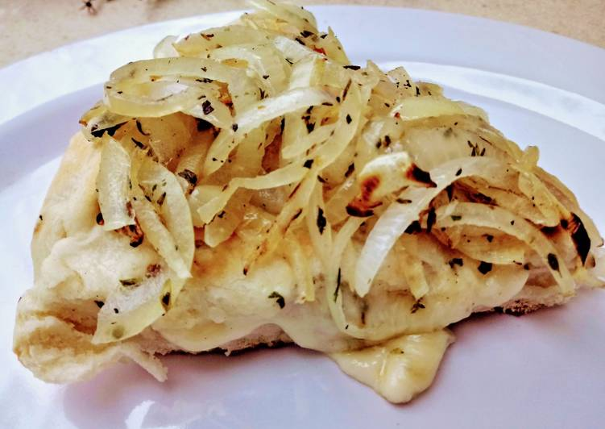

Pizza Fugazzeta

| Ingredientes |
Cantidades |
| Harina 0000 |
600 gr. |
| Levadura fresca |
30 gr. |
| Sal |
1/2 cucharadita |
| Aceite |
3 cucharaditas |
| Azucar |
1 cucharadita |
| Agua tibia |
1 taza |
| Cebollas |
2 |
| Queso Mozzarella |
200 gr. |
| Queso fresco |
100 gr. |
| Oregano y Aceite |
A GUSTO |
- Colocar en la mesada la harina con la sal en forma de corona. Agregar en el centro la levadura ya diluida en agua tibia (1/2 taza) y el azúcar. No olvidarnos del aceite, empezar a unir e ir agregándo más agua hasta formar el bollo. Dejar levar.
- Pelar las cebollas, cortar bien fina (pluma), colocar en un recipiente salar, y cubrir con agua bien fría dejar reposar un rato. Luego escurrir muy bien el agua, secar con un lienzo, espolvorar con orégano y un poquito de aceite. Reservar.
- Una vez duplicado el bollo cortar en dos partes una un poco más grade que va a ser para la base. Estirar ambos bollos.
- Aceitar una pizzera, colocar la parte más grande levantando un poco los bordes contra el molde, colocar fetas de jamón si se desea, encima la mozzarella y el queso fresco cortado en daditos, espolvorear con orégano.
- Tapar con la otra más, haciendo presión en la unión de las masas, volcar la cebolla reservada. Llevar a horno a 200 ° alrededor de 20 minutos, ir mirándo para que no se nos vaya a quemar la cebolla.
- Queda riquísima la base crocante, la catarar de queso al cortárla y una rica cebolla semi crocante encima. A disfrutar ésta pizza tan solicitada.
Receta de: Graciela Martinez